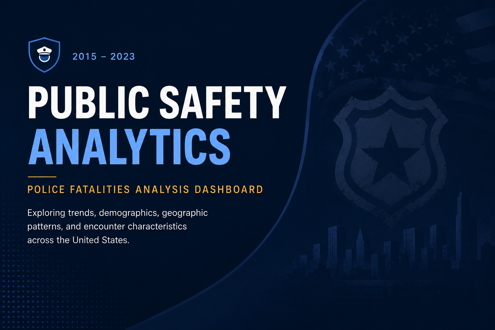

SQL Analysis
Cleaning, joins, feature engineering, segmentation, trend analysis, and quality checks using BigQuery, Oracle SQL, and relational datasets.
Analytics strategy • dashboards • decision support
I turn messy operational, marketing, and public-sector data into clear dashboards, SQL workflows, and executive-ready recommendations for teams that need confident decisions.
I combine technical analysis with stakeholder communication so dashboards, reports, and recommendations feel practical to use after the presentation ends.
Cleaning, joins, feature engineering, segmentation, trend analysis, and quality checks using BigQuery, Oracle SQL, and relational datasets.
Interactive Tableau dashboards and KPI views that help teams monitor performance, spot outliers, and compare patterns quickly.
Executive summaries, Case studies, and recommendations that connect findings to marketing, operations, healthcare, and public-safety decisions.
End-to-end analysis using SQL, visualization, and business storytelling to identify rider behavior patterns and support annual membership growth.
.png)
SQL workflow and Tableau dashboard exploring borough-level, demographic, geographic, and monthly arrest patterns.

SQL-driven analysis of sales trends, customer segments, and product performance with business-facing recommendations.

Oracle SQL and Tableau workflow for monitoring nutrition trends, outliers, and clinical decision-support KPIs.

Tableau dashboard analyzing fatal police encounters through trend, jurisdiction, and public-safety views.

Interactive Tableau dashboard exploring release patterns, award recognition, collaborations, and career milestones.